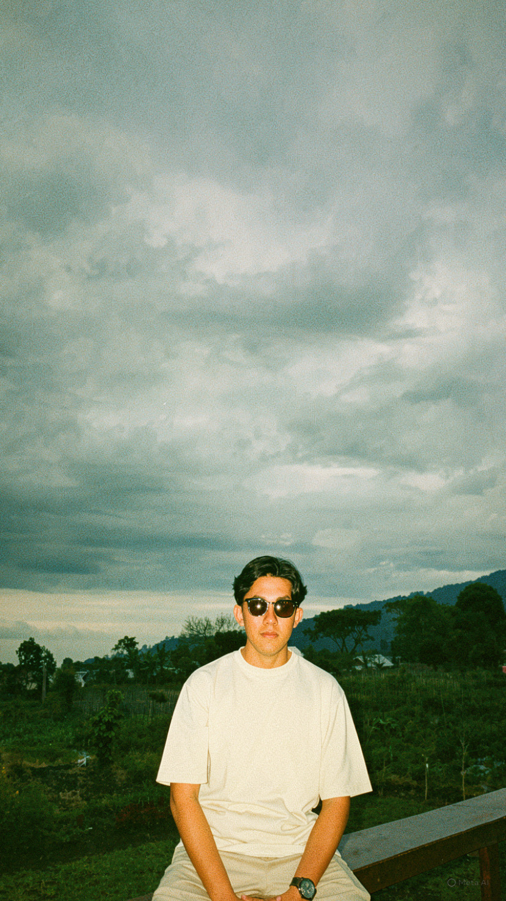

Saya membangun formulir pengaduan dengan unggahan bukti, pelacakan status, dan akses khusus petugas.
Next.js · Supabase · PostgreSQLHalo, saya
Risfanda Audiarrahman Charisma.
Seorang Software Engineer dan lulusan Teknik Informatika Universitas Mataram. Siap menghadirkan solusi digital yang inovatif dan berdampak.
Lihat proyek saya
Universitas Mataram, 2026
PENGEMBANGAN WEB / UI/UX / ANALISIS DATALIHAT PROYEK
01 / PROFIL
Tentang saya

Lulusan S1 Teknik Informatika Universitas Mataram (IPK 3.58/4.00) dengan fondasi ilmu komputer yang kuat dan keahlian praktis dalam Fullstack Web Development serta Data Analytics & Machine Learning.
Berpengalaman membangun berbagai solusi digital, mulai dari aplikasi pengaduan publik berbasis serverless, e-commerce dengan arsitektur modern, hingga perancangan UI/UX untuk instansi pemerintah. Aktif mengembangkan diri melalui riset teknologi, salah satunya tercermin dari publikasi jurnal ilmiah di bidang keamanan digital.
3.58/ 4.00IPK kelulusan
2026S1 Teknik Informatika
MataramLombok, Indonesia
02 / PROYEK
Proyek yang saya kerjakan
Aplikasi web, prototipe Figma,
dan penelitian tugas akhir.
5 proyek / 2025–2026
Saya membuat keranjang yang tersimpan per pelanggan dan panel untuk menandai kopi yang sedang habis.
Laravel · MySQL · Alpine.jsDesain pemesanan tiket dari katalog sampai e-ticket.
Figma · Prototyping · User flowClustering data survei mahasiswa dengan metode K-Means.
Python · K-Means · Data analyticsDesain aplikasi undian struk belanja untuk BKD Kota Mataram.
Figma · Wireframing · Accessibility03 / KEAHLIAN
Teknologi yang saya gunakan
Digunakan dalam proyek web,
perancangan antarmuka, dan penelitian.
01
Pengembangan web
Next.js · TypeScript · JavaScript · PHP · Laravel
Tailwind CSS · Alpine.js · HTML & CSS
02
Database & layanan cloud
Supabase · PostgreSQL · MySQL
Authentication · Row Level Security · Storage
03
Analisis data & machine learning
Python · K-Means Clustering
Data preprocessing · Data analytics
04
Desain & alat kerja
Figma · Wireframing · Interactive prototyping
Git / GitHub · Vercel
04 / PENGALAMAN & PENDIDIKAN
Pengalaman dan pendidikan
Magang di BKD Kota Mataram,
kuliah, dan pelatihan tambahan.
UI/UX Design Intern
Badan Keuangan Daerah Kota MataramMerancang aplikasi public reward untuk partisipasi masyarakat melalui unggahan struk belanja. Menerjemahkan kebutuhan instansi menjadi user flow, wireframe, dan prototipe yang mudah dipahami.
S1 Teknik Informatika
Universitas Mataram · IPK 3.58 / 4.00Riset tugas akhir: clustering tingkat kerentanan mahasiswa terhadap fraud OTP pada transaksi digital menggunakan metode K-Means.
2026 / SERTIFIKASIJUN APR